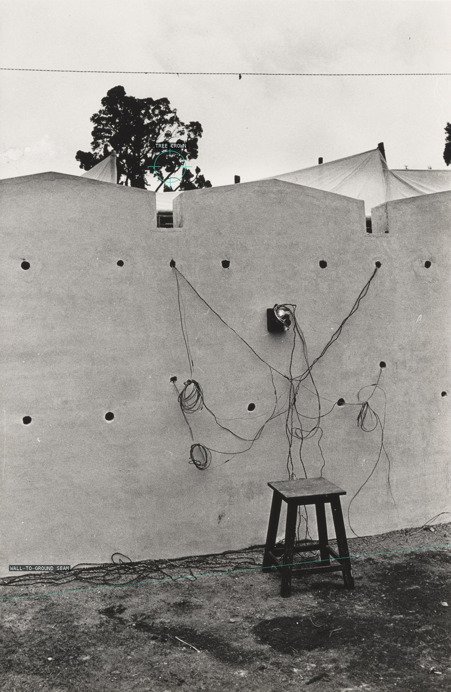
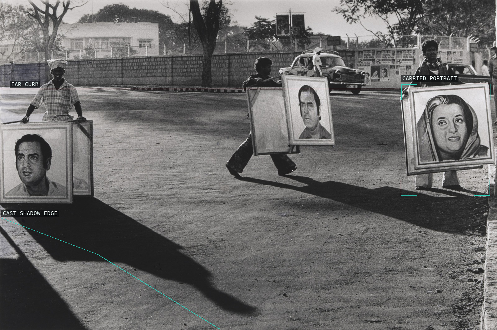
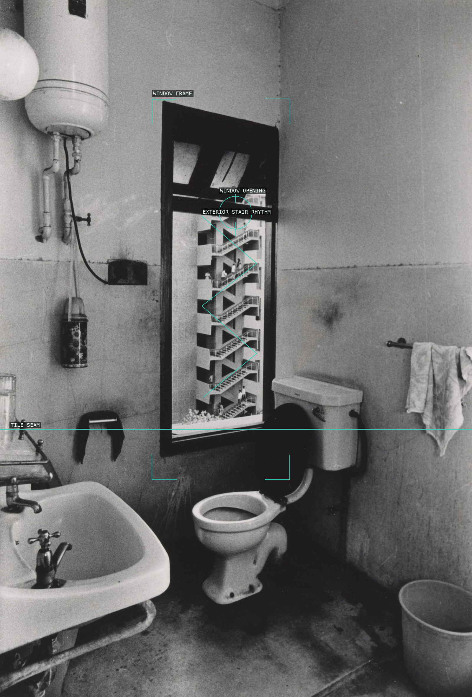
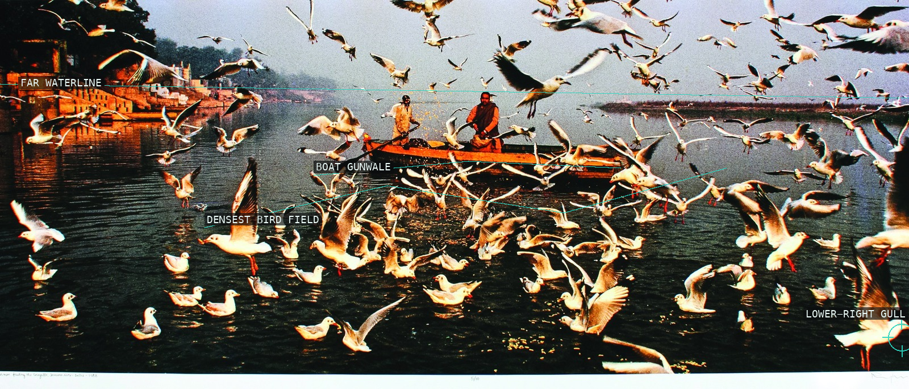
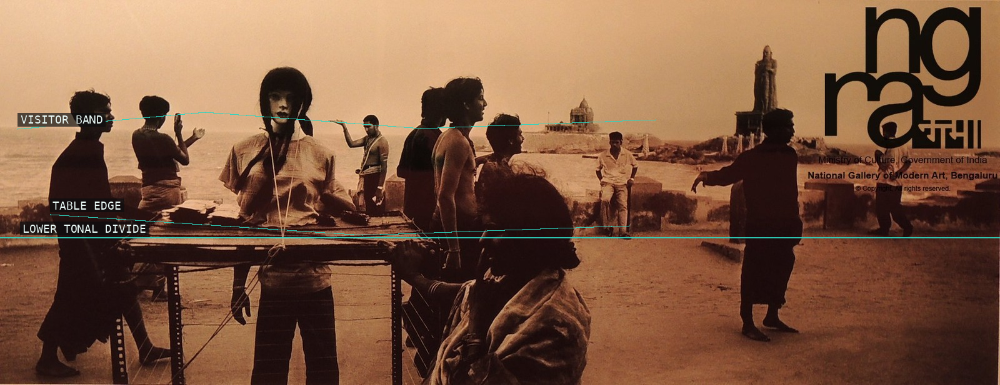

/* raghu-rai - proofs */
5 plates. Deterministic overlays rendered by the composition-analysis skill.

01-a-village-near-delhi
The low wall seam and tree crown give a sparse utility-wall view its vertical balance.

02-portrait-of-the-gandhi-family
The curb and the long cast shadow put three carried portraits into a staged public roadway.

03-a-view-of-a-bathroom-delhi
The bathroom window turns an exterior stair into a nested, repeating interior picture.

04-feeding-the-seagulls-jamuna-delhi
The still boat gives the scattered bird field a horizontal center and human scale.

05-visitors-at-kanyakumari
Silhouetted visitors, a long table, and the divided ground turn a panorama into a lateral social rhythm.